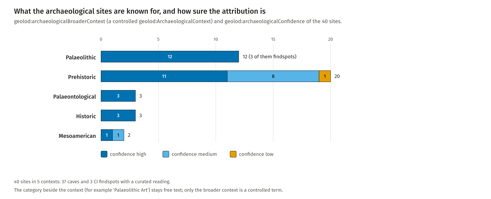

PREFIX geolod: <http://w3id.org/geo-lod/>
PREFIX strat: <http://w3id.org/geo-lod/strat/>
PREFIX sisal: <http://w3id.org/geo-lod/sisal/>
PREFIX sosa: <http://www.w3.org/ns/sosa/>
PREFIX rdfs: <http://www.w3.org/2000/01/rdf-schema#>
PREFIX dct: <http://purl.org/dc/terms/>
PREFIX qudt: <http://qudt.org/schema/qudt/>
PREFIX epica: <http://w3id.org/geo-lod/epica/>
PREFIX geo: <http://www.opengis.net/ont/geosparql#>
PREFIX ci: <http://w3id.org/geo-lod/ci/>
PREFIX dcat: <http://www.w3.org/ns/dcat#>
# Per kind of place: how many, how many have been screened for archaeology, how many carry archaeological evidence.
SELECT ?kind (COUNT(DISTINCT ?site) AS ?places) (COUNT(DISTINCT ?screened) AS ?screened_places)
(COUNT(DISTINCT ?positive) AS ?typed_archaeological) (COUNT(DISTINCT ?both) AS ?typed_and_screened) WHERE {
{ ?site a geolod:Cave . BIND("caves" AS ?kind) } UNION { ?site a geolod:CIFindspot . BIND("CI findspots" AS ?kind) }
OPTIONAL { ?site geolod:screenedForArchaeology true . BIND(?site AS ?screened) }
OPTIONAL { ?site a ?evidence . FILTER(?evidence IN (geolod:ArchaeologicalCaveSite, geolod:CIArchaeologicalSite)) BIND(?site AS ?positive) }
BIND(IF(BOUND(?screened) && BOUND(?positive), ?site, ?nothing) AS ?both)
} GROUP BY ?kind ORDER BY ?kind
Run on the committed graphs and compared with the figure: 37 of 365 caves and 12 of 74 findspots carry an archaeological class; 37 and 3 of them also have a curated reading.

Archaeological sites by broader context and confidence
Fiona Schenk, Florian Thiery, Research Squirrel Engineers at LEIZA. CC BY 4.0.
PREFIX geolod: <http://w3id.org/geo-lod/>
PREFIX strat: <http://w3id.org/geo-lod/strat/>
PREFIX sisal: <http://w3id.org/geo-lod/sisal/>
PREFIX sosa: <http://www.w3.org/ns/sosa/>
PREFIX rdfs: <http://www.w3.org/2000/01/rdf-schema#>
PREFIX dct: <http://purl.org/dc/terms/>
PREFIX qudt: <http://qudt.org/schema/qudt/>
PREFIX epica: <http://w3id.org/geo-lod/epica/>
PREFIX geo: <http://www.opengis.net/ont/geosparql#>
PREFIX ci: <http://w3id.org/geo-lod/ci/>
PREFIX dcat: <http://www.w3.org/ns/dcat#>
# The findspots of the map: position and the certainty of the position (a statement on the geometry node).
SELECT ?site ?wkt ?certainty WHERE {
?site a geolod:CIFindspot ;
geo:hasGeometry ?geom .
?geom geo:asWKT ?wkt .
OPTIONAL { ?geom geolod:hasCertaintyLevel ?certainty }
} ORDER BY ?site
Run on ci_findspots.ttl and compared with the figure: 74 findspots; the certainty is read from the geometry node.
PREFIX geolod: <http://w3id.org/geo-lod/>
PREFIX strat: <http://w3id.org/geo-lod/strat/>
PREFIX sisal: <http://w3id.org/geo-lod/sisal/>
PREFIX sosa: <http://www.w3.org/ns/sosa/>
PREFIX rdfs: <http://www.w3.org/2000/01/rdf-schema#>
PREFIX dct: <http://purl.org/dc/terms/>
# Per class of the cluster: nodes typed with the class itself, and nodes typed with it or a subclass.
# Runs on the committed graphs (EPICA, SISAL cave catalogue) together with the three ontology files.
SELECT ?class (SUM(IF(?t = ?class, 1, 0)) AS ?asserted) (COUNT(DISTINCT ?x) AS ?with_subclasses) WHERE {
VALUES ?class { geolod:ArchaeologicalCaveSite
geolod:ArchaeologicalContext
geolod:CIArchaeologicalSite
geolod:CIFindspot }
?x a ?t .
?t rdfs:subClassOf* ?class .
} GROUP BY ?class
Run on the committed graphs with the ontology files and compared with a count in Python: 4 of 4 classes have asserted nodes.
Classes
Class
Label
Comment
CRM anchor
geolod:ArchaeologicalCaveSite
Archaeological Cave Site
A SISAL cave site that also carries confirmed or probable archaeological evidence (art, human occupation, skeletal remains, inscriptions). Modelling mirrors the CIArchaeologicalSite pattern from ci_pipeline.py.
crmarchaeo:A2_Stratigraphic_Volume_Unit
geolod:ArchaeologicalContext
Archaeological Context
Controlled vocabulary class for broader cultural-temporal context categories used in archaeological cave site classification.
crm:E55_Type
geolod:CIArchaeologicalSite
CI Archaeological Site
A CI Findspot that also carries confirmed or probable archaeological evidence (artefacts, occupation layers, stratified contexts). Mirrors the ArchaeologicalCaveSite pattern in the SISAL extension.
crmarchaeo:A2_Stratigraphic_Volume_Unit
geolod:CIFindspot
Campanian Ignimbrite Findspot
A documented findspot of Campanian Ignimbrite tephra. Modelled as crm:E27_Site so that geometry, name, and finds can attach via standard CRM patterns.